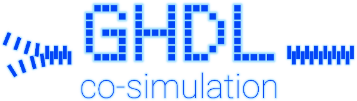

Co-simulation with GHDL¶



This repository contains documentation and working examples about how to co-simulate VHDL and other languages through GHDL’s foreign interfaces. Since specific features of the language and the tool are used, it is suggested for users who are new to either GHDL or VHDL to first read the Quick Start Guide in the main documentation (ghdl.github.io/ghdl).
Three main approaches are used to co-simulate (co-execute) VHDL sources along with software applications written in a language other than VHDL (typically C/C++/SystemC):
Verilog Procedural Interface (VPI), also known as Program Language Interface (PLI) 2.0.
VHDL Programming Interface (VHPI), or specific implementations, such as Foreign Language Interface (FLI).
Generation of C/C++ models/sources through a transpiler.
VPI and VHPI are complex APIs which allow to inspect the hierarchy, set callbacks and/or assign signals. Because provided features are similar but VPI was published years before VHPI, GHDL supports VPI only. Furthermore, as an easier to use alternative, GHDL features a custom coexecution interface named VHPIDIRECT, similar to SystemVerilog’s DPI (Direct Programming Interface). As of today, generation of C++/SystemC models à la Verilator is not supported. However, a vhdlator/ghdlator might be available in the future.
Attention
In fact, VHPIDIRECT is defined as part of VHPI in VHDL 2008 LRM. However, GHDL’s implementation is not compliant with the standard. This is probably because VHPIDIRECT was implemented in GHDL based on some draft, before VHDL 2008 was official. Nevertheless, the VASG is currently discussing the addition of a Foreign Function Interface (FFI) or Direct Programming Interface (DPI) to the next revision of the standard. See [LCS-202x] VHDL DPI/FFI based on GHDL’s implementation of VHPIDIRECT (PDF).
VHPIDIRECT is easier to use than VPI/VHPI because, as the name suggests, it is a direct interface. However, on the one hand VHPIDIRECT requires modification of VHDL sources, which might not be possible or desirable in certain contexts. On the other hand, VPI/VHPI allow use cases which are not yet possible with VHPIDIRECT, such as controlling execution time steps. It is suggested to read the quick start examples of both interfacing mechanisms, in order to get a feel for the differences.